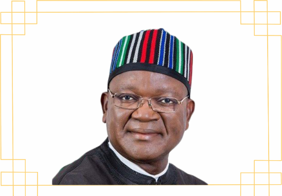

DR. SAMUEL ORTOM
The Executive Governor Of Benue State
Samuel Ioraer Ortom is a Nigerian politician, businessman,
administrator and philanthropist. He was a Minister of State
Trade and Investments in Nigeria during the presidency of
Goodluck Jonathan. Ortom was elected governor of Benue State
as a member of the All Progressives Congress in 2015.
